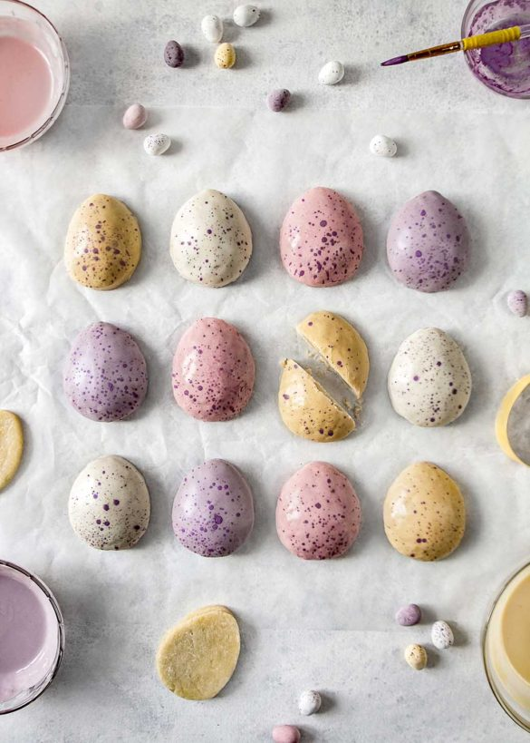

Figolli

Figolli are a small, sweet biscuit originating on the islands of Malta.
Each figolla is made of shortcrust pastry, filled with an almond filling.
Figolli are made in many shapes like hearts, stars and bunnies, among many
others.
Ingredients
Pastry
- 500 gm plain flour
- 227 gm cold butter, grated
- 150 gm catser sugar
- Zest of one large lemon
- 2 tsp pure vanilla extract
- 2 medium egg yolks
- 60 ml water
Almond Paste Filling
- 250 gm ground almonds
- 250 gm caster sugar
- 2 medium egg whites
- 1 tsp almond extract
Other Ingredients
- 2 tbsp of milk (of your choice)
- 400 gm white chocolate, chopped
- 2 tbsp flabvourless oil
- Assorted food colouring gels
- Food colouring powders for the speckles (optional)
- 1/2 tbsp vodka to mix with the powders (optional)
Steps
Preparing the Pastry and Filling
-
In a large bowl, combine flour with the grated butter with your hands or
a pastry blender. Add the rest of the ingredients and mix well until
smooth.
-
Transfer the pastry to a flat surface and divide in half. Wrap each half
in cling film and refrigerate for at least 1 hour. One half will be the
base and the other half the surface.
-
To make the filling, whisk the ground almonds with the sugar. Pour in
the egg whites and almond extract (optional) to form a sturdy paste.
Wrap in cling film and refrigerate along with the pastry.
Assembling and Baking
-
Prepare a baking sheet with a double layer of parchment paper. Preheat
oven to 200°c.
-
Roll out one half of the pastry on a floured surface to 0.5cm / 0.2"
thickness. Use your cutter to cut out the shapes and transfer to the
prepared sheet, at least 2cm apart.
-
Roll out the almond paste filling and use the same cutter as the pastry.
Press the sides of the cut filling inward to make it smaller. Place on
top of the pastry shapes in the baking sheet. Brush the edges of the
pastry (around the filling) with milk.
-
Roll out the second half of the pastry and cut out the shapes. Transfer
the pastry on top of the filling to make the surface. Press the edges to
glue it down to the base that has been brushed with milk.
-
Brush the surface with a very light layer of milk. Bake for 18-20
minutes and take out before they start to get golden. Transfer to a
cooling rack and let cool.
Decorating
-
Melt the white chocolate (or chocolate of preference) until smooth. Stir
in 2 tbsp of flavourless oil (for shine and texture).
-
(Optional) Add the food colour gel to the divided chocolate. (You can
use a drop of lilac to reduce the yellow tones from the white one.)
-
Place a baking sheet underneath the cooling rack. Pour the white
chocolate over the figolli. You can reuse the white chocolate that drips
into the baking sheet. Let the chocolate set completely.
-
(Optional) Mix some purple food colouring powder with 1/2 a tsp of vodka
to make the speckles. Use a brush and your fingers to speckle.
- Enjoy!
Home